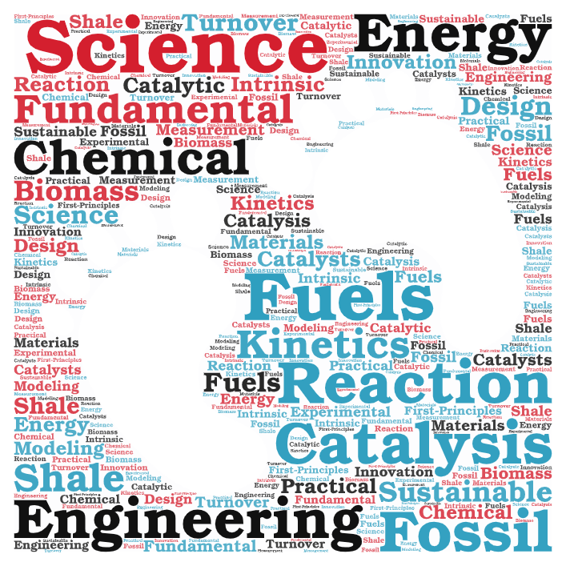

Prof. Xiao's group focuses on the fundamental research of catalysis science and reaction engineering for producing sustainable chemicals and fuels. The ongoing transition from fossil-based energy resources to alternative energy sources such as shale gas and biomass urgently requires the development of next-generation catalysts and catalytic processes. To move forward, it is imperative to bridge the relatively wide gap between fundamental research of catalysis science (active site requirements and turnover frequencies) and the ability to transfer knowledge to practical innovation, which is essentially based on the discipline of chemical reaction engineering. Our research typically involves combined experimental and modeling studies, for example, the precise measurement of intrinsic kinetics in the lab and First-Principles predictions of surface reaction kinetics. The current research is financially supported by the Louisiana Space Grant Consortium (LaSPACE, a NASA EPSCoR center), the Louisiana Materials Design Alliance (LAMDA, supported by NSF EPSCoR and Louisiana Board of Regents), and the start-up funds provided by Louisiana Tech's College of Engineering and Science.

Research Word Cloud